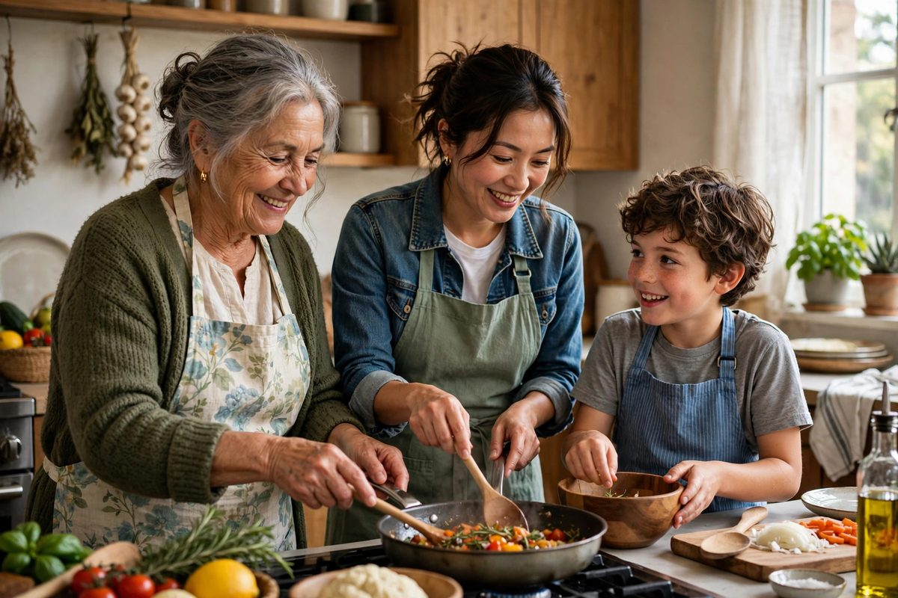

Calorie Needs by Age
How daily calorie needs change from your 20s to your 70s, and how to adjust your eating as you age.
Calorie needs fall gradually with age, because muscle mass declines, activity usually drops, and the body becomes slightly more efficient. The change is slow — roughly 1 to 2 percent per decade after early adulthood — but over thirty years it adds up to several hundred calories a day. This guide explains how needs change at each stage of life and how to adjust without feeling deprived.
Your 20s: the peak years
In your 20s, calorie needs are at their highest for most people, because muscle mass is near its peak and activity is usually high. A moderately active man in his 20s may need around 2,600 to 2,800 calories a day, and a moderately active woman around 2,000 to 2,200. These are rough averages; the calculator gives a personal figure. The main risk in this decade is not eating too little but building habits that add weight slowly: frequent takeaways, sugary drinks and alcohol can add hundreds of calories a day without much notice.
Your 30s and 40s: the slow decline
In your 30s and 40s, needs fall by roughly 100 to 200 calories a day compared with your 20s, mainly because muscle mass starts to decline and activity often drops with work and family demands. A moderately active man in his 40s may need around 2,400 to 2,600 calories, and a woman around 1,900 to 2,100. Strength training twice a week is the best defence, because it preserves the muscle that keeps calorie needs up. This is also the decade when a daily step target and a rough sense of portions start to matter more.
Your 50s and 60s: protecting muscle
After 50, the decline continues, and protein becomes more important: older adults need more protein per meal to maintain muscle, so aim for a palm-sized portion at each meal and keep strength training. A moderately active man in his 60s may need around 2,200 to 2,400 calories, and a woman around 1,800 to 2,000. Appetite often falls too, which can make it hard to eat enough protein and nutrients even as calorie needs drop. Focus on nutrient-dense foods rather than simply eating less.
Your 70s and beyond
In later life, the risk flips: under-eating becomes a bigger concern than overeating for many people. Calorie needs may fall to around 2,000 for men and 1,600 for women, but protein and nutrient needs stay high, and unintentional weight loss should be discussed with a doctor. Keep meals regular, include protein at each meal, stay hydrated, and keep moving daily, even if it is only walking. Strength and balance exercises matter more than ever, because they protect independence.
Adjusting across the decades
The practical rule is to recalculate your calorie needs every few years, or whenever your weight, activity or routine changes. Do not chase the number you needed at 25; eat for the body you have now. Keep the focus on protein, vegetables and daily movement at every age, and treat the calorie target as a guide rather than a strict limit. Small, steady adjustments beat dramatic diets at any age, and the habits that work in your 30s will still be working in your 60s.
A life in numbers
Follow one person through the decades. At 25, a moderately active man needs about 2,700 calories a day. At 35, about 2,600. At 45, about 2,500. At 55, about 2,400. At 65, about 2,300. The fall is roughly 100 calories a decade, which sounds small, but it adds up: eating the 25-year-old's diet at 65 is a surplus of 400 calories a day, or about 20 kg of weight gain in a year if nothing else changes. The fix is not a dramatic diet at 65 but a small adjustment each decade: a slightly smaller portion, a daily walk, and strength training twice a week to protect muscle. Small, steady adjustments beat dramatic diets at any age, and the earlier they start, the easier they are.
Frequently Asked Questions
Do calorie needs fall with age?
Yes, gradually — roughly 1 to 2 percent per decade, mainly because muscle mass and activity decline.
How many calories does a 60-year-old need?
It varies, but a moderately active man in his 60s may need around 2,200 to 2,400 a day and a woman around 1,800 to 2,000. Use the calculator for a personal figure.
Should older adults eat less protein?
No — more. Older adults need more protein per meal to maintain muscle, so include a palm-sized portion at each meal.